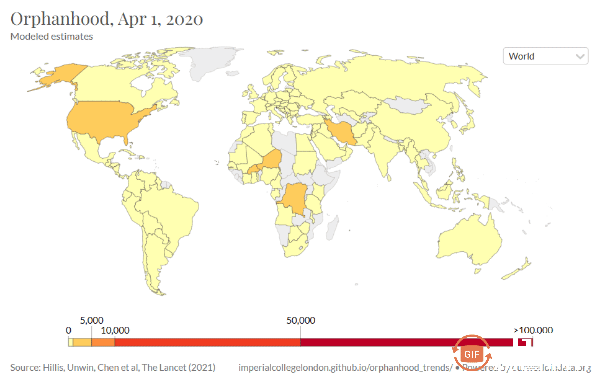
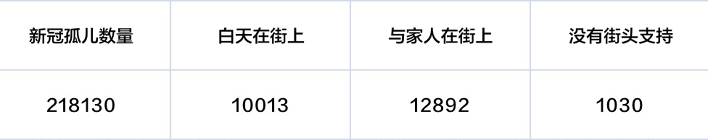
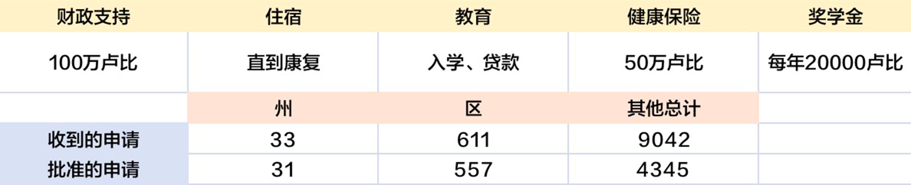
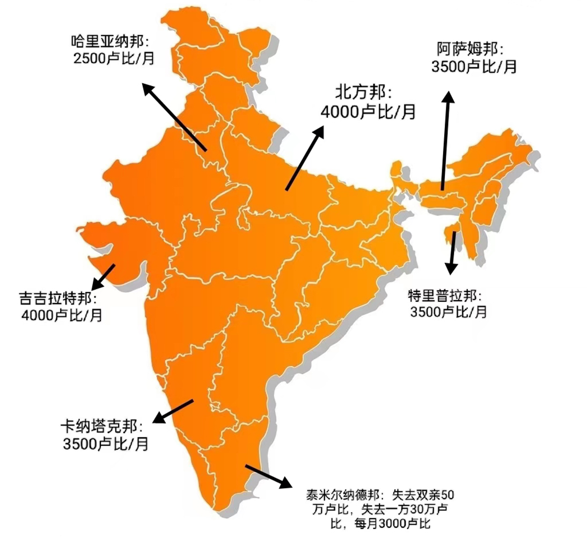
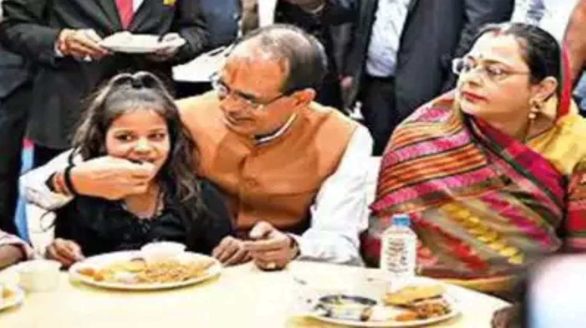

印度帕塔普尔的一座小房子里，索纳利白天给弟弟妹妹做饭，晚上哄他们入睡，希望能像她的母亲一样减轻他们的恐惧。
索纳利承担了照料家庭的角色，而她还只是个14岁的孩子。几年前，她的父亲在销售手推车备件的家族生意失败后自杀。
然后在5月，灾难性的感染浪潮席卷了印度，她的母亲萨比塔因新冠病毒去世。
“母亲就像雨伞一样，为我们遮挡生活的风雨，”索纳利忍住泪水说道，“我想象她就在身边。这是我坚持下去的动力。”
这样令人心碎的悲剧，自新冠疫情爆发以来，一直在全世界发生。
当地时间2020年1月30日晚，世界卫生组织宣布将新型冠状病毒疫情列为国际关注的突发公共卫生事件，
3月11日，世界卫生组织表示，新冠肺炎疫情的爆发已经构成一次全球性“大流行”。2021年4月，新冠疫情在印度出现第二次大爆发，
4月17日—4月25日的一周内，平均每天有2336名印度人死亡，是第一波高峰期时的两倍。
2022年9月，美国总统拜登宣布美国新冠疫情大流行结束，世界大部分国家和地区虽然没有发布类似的正式声明，但基本上也都进入了疫情的尾声阶段。
世卫组织流行病学专家迈克尔·瑞安（Michael J. Ryan）认为“大流行的急剧期已经进入尾声，终将在2022年终结，但病毒本身不太可能完全消失，
走向疫情终结仍然是一条崎岖不平的道路，我们希望在这个过程中，继续通过常规防疫措施和疫苗公平分发，保护各国的脆弱人群和医护人员。
”在各国和组织讨论后续的医疗措施、人道主义计划的同时，“新冠孤儿”这一群体，似乎在社会上悄悄“隐形”了。
2021年7月和2022年4月，国际期刊《柳叶刀》发布了两篇估算因新冠流行病而成为孤儿（父母双方或其中一方死亡）和失去照顾者的儿童的最低数量论文， 在第二篇论文的计算模型里，新冠孤儿数量位列前三的国家分别是印度（1917100）、墨西哥（192500）和巴西（169900）。
根据这个模型，CDC与帝国理工大学合作估算出了新冠病毒爆发以来全球各个国家每一天的新冠孤儿人数：
图3.全球各国新冠孤儿总数量（截止至2022年9月30日）
图4.全球各国新冠孤儿数量增长（截止至2022年9月30日）
图源：Centers for Disease Control and Prevention
新冠疫情的伤害仍不止于此，它给儿童的痛楚绝不局限于失去父母和经济支柱，还会带来学校关闭，儿童无法正常接受教育，有人早早地成为童工、遭遇家庭暴力等一系列次生伤害。
自新冠疫情以来，32%的家庭里曾出现过身体或者情感暴力，儿童报告的家庭暴力在学校关闭时为17%，比上学时的8%高出一倍。
63%的女孩做家务的时间增加，52%的女孩照顾家人时间增加，导致她们无法专心学习。据估计，970万儿童可能在疫情后永远无法重返学校。
还有热心人士担心，当社会对新冠孤儿的关注消退时，孤儿将会很容易受到剥削。已经有一些失去家人、惊魂未定的孩子发现，他们很难开具死亡证明以获得接收政府福利的资格，甚至存在父母因疫情失去经济来源无力抚养而被迫成为“孤儿”的儿童。
11岁的索尼娅和她的母亲、弟弟以及祖父住在印度东北部的贾坎德邦。2021年5月，她的父亲拉维死于新冠肺炎，他是家里唯一的经济支柱，在他去世后，家里陷入了经济危机。“我们的世界天翻地覆。
没有丈夫，我不知道该怎么养家。在我的村子里没有任何托儿所或托儿服务。最重要的是，学校因为新冠肺炎而停课，索尼娅被学校送回家了。”学业突然中断，母亲又需要外出找工作，索尼娅独自一人度过了很长一段时间，她面临着被拐卖至童婚、童工、卖淫和再也见不到家人的风险， 同时，她不得不接受失去父亲的痛苦。由于找不到工作，绝望的拉达考虑做出一个令人心碎的决定，把索尼娅送进了孤儿院。
从长远来看，许多来自偏远地区贫困家庭的孤儿面临着人口贩卖和童婚的风险，印度的收养程序繁琐，许多孤儿无法被收养。尤其是年龄较大的儿童，往往无法与收养家庭配对。印度妇女儿童发展部还敦促公众不要在社交媒体上传播收养新冠孤儿的信息。由于担心这种不受监管的“收养”甚至可能导致儿童贩运，该部早些时候曾致函各州，要求他们监督此类活动，并确保这些孤儿被抚养。
还有分析显示，到2025年，还有250万女孩面临早婚的风险，这是25年来童婚率的最大增幅。据估计，由于2019冠状病毒病对贫困家庭造成的经济影响，2020年将有50多万女孩面临被迫童婚的风险，预计将有100多万女孩怀孕。
南亚预计将受到最严重的打击，到2020年将有近20万女孩面临童婚风险。救助儿童协会首席顾问Karen Flanagan表示，现在是时候加大行动举措了：疫情意味着更多的家庭陷入贫困，迫使许多女孩工作养家、挨饿、成为主要照顾家庭成员的人，并辍学——她们重返校园的机会远低于男孩。同时，暴力和性剥削的风险不断增加，加上粮食和经济的不安全，也意味着许多父母觉得他们别无选择，只能强迫自己的女儿嫁给通常比自己大得多的男人。
在印度海得拉巴的老城区的一间房子里，住着拉西姆、拉比亚和雷哈娜三个孩子，与附近孩子的差别在于，他们独立生活，没有父母或亲戚的监护。 他们的父亲吉拉姆死于新冠病毒大流行，2021年5月的一个晚上，吉拉姆因感冒发烧回家，但孩子们没预料到父亲会离开得这么快。5月11日，吉拉姆去世，那是新冠病毒在海得拉巴的第二次高潮。
视频1.三兄妹的故事
视频来源：The Quint World
失去父亲后，拉西姆、拉比亚和雷哈娜三兄妹被留在了远方的亲戚家中照顾。很快，他们的邻居看到特伦甘纳邦部长宣传的一条儿童帮助热线，他与海德拉巴区政府联系，帮助了他们。 一位提供支持的海得拉巴工作人员说，孩子们正在参加在线课程，当地妇女和儿童福利部门的项目主任承诺给本地区的新冠孤儿提供每月两千卢比的资金补助和免费食物。
针对新冠孤儿问题，印度政府一边反对柳叶刀提出的数据（印度妇女儿童发展部表示，根据官方数据，印度因新冠疫情而受影响的儿童人数为1,53,827人）并在政府网站上公布了因新冠疫情而受到影响的儿童数量和不同类型， 一边于2021年5月提出了“PM-CARES for Children”计划，宣布要为所有在新冠疫情中失去父母的儿童提供资金支持和其他方面的援助。
图7.印度政府统计的新冠孤儿数量及类型（截止至2022年10月30日）
数据来源：Baalswaraj Portal National Commission for Protection of Child Rights
图8.印度PM-CARES for Children计划能为新冠孤儿提供的帮助
数据来源：PM-CARES
除此之外，不同地区的政府也提出了不同的计划以帮助当地新冠孤儿。印度法里达巴德的维沙尔是一位特殊的“新冠孤儿”，他有身体障碍，原本由当地一对父母收养，但2021年5月份，他的养父母都死于新冠病毒，维沙尔再次成为孤儿， 5月30日，哈里亚纳邦首席部长马诺哈尔·拉尔在 Deep Ashram得知了维沙尔的状况，被他的故事所感动，立即宣布代表政府收养他，并宣布他的所有费用将由政府承担。
图9.印度各地政府对新冠孤儿提供的财政支持
数据来源：The India Express
图10.首席部长Shivraj Singh Chouhan与新冠孤儿一起庆祝排灯节
图源：Times of India
不只印度一国，其他地区政府也针对“新冠孤儿”群体设计了一系列措施，以保证他们的健康成长和教育需求。
至少有7项法案已在几个州提交给众议院/国会，以制定一系列措施，确保父母死于新冠肺炎的18岁以下未成年人的“保护、教育和健康”。 在2021-2022年，至少有11个州和一些大城市，如圣保罗，已经批准了法律或正在考虑法案，为每个孩子提供每月500巴西雷亚尔(约合96美元)的货币津贴，直到他们达到法定成年年龄18岁。
众议院提出了一项法律，旨在为哥伦比亚因新冠疫情而成为孤儿的儿童提供资金支持。该法律的目的是创建一个临时项目，对应于有条件和定期的资金转移，帮助那些因新冠大流行造成的健康紧急情况而失去至少一方父母和/或监护人的儿童和青少年。 该法律还旨在建立一个新冠孤儿单一国家登记处和综合护理计划。
印度尼西亚通过了政府《儿童特别保护条例》，授权妇女赋权和儿童保护部通过家庭护理和满足基本和特殊需求，对父母因COVID-19而死亡的儿童实施特别保护。 此外，该部启动了一个登记册(通过儿基会的RapidPro平台)，以收集社区数据，以确定因COVID-19死亡而失去父母的儿童数量，并确定他们在紧急情况下的需求。
在墨西哥，贝尼托·华雷斯奖学金为受冠状病毒影响的孤儿提供每月800墨西哥比索(约合40美元)的津贴。美国加州提出一项法案，将建立加州幸存者福利计划， 为父母或监护人死于新冠病毒的儿童和寄养儿童提供信托基金账户；纽约市的家庭资源支持中心也在降低儿童受虐待和进入寄养机构的风险方面做出了有效贡献。
虽然眼下许多国家都从新冠疫情中复苏过来，学校复课、重新开放，卡塔尔世界杯的举办更成了一场狂欢，甚至，对于那些因新冠病毒失去父母的孩子，似乎也有了妥当的安排， 政府拨款、民众援助都开始发挥作用，但还远远不够。心理健康、失去父母的痛苦、收养家庭可能存在的风险……这些隐患都使得“新冠孤儿”需要更多的社会帮扶， 想让这部分群体不被忽视、拼合起他们的童年碎片，还有一段长路要走。
现在，拉希姆想成为板球运动员或医生，他的妹妹拉比亚梦想成为一名警察，雷哈娜则想成为一名教师。 孩子们认为能靠自己的力量实现这些，但他们承认夜晚是可怕的。"晚上关灯时，拉比亚感到害怕。所以我们一直开着一盏灯。"雷哈娜说。
参考文献和报道
1. 索纳利：纽约时报中文网 2021年7月13日 《“妈妈，你什么时候回来？”：印度疫情中的孤儿们》
2. 联合国新闻 2022年1月5日《【专题报道】世界终将走出新冠大流行的阴霾》
3. BBC NEWS中文 2021年4月28日 《新冠疫情：印度第二波大爆发为何让全世界感到揪心》https://www.bbc.com/zhongwen/simp/world-56900671
4. BBC NEWS中文 2022年9月26日《各國新冠疫情漸次「收尾」 大流行怎麼定義？》
5. 索尼娅：Hope and Homes for Children 2021年10月24日 COVID STOLE SONIA’S FATHER. THEN IT NEARLY STOLE HER CHILDHOOD TOO
6. 儿童拐卖：The Indian EXPRESS 2021年5月18日 Ministry of Women and Child Development: Don’t call for children’s adoption on social media
7. 童婚：save the children 2020年10月1日 COVID-19 causing greatest surge of child marriages in 25 years
8. 拉西姆一家：The Quint World 2021年9月1日 Home Alone: Orphaned by COVID, 3 Teen Siblings Live by Themselves
9. 维沙尔：The Indian EXPRESS 2021年5月31日 Orphaned ‘twice’, teen with special needs adopted by Khattar govt
10. 举措：CDC 2022年10月25日 Global Orphanhood Associated with COVID-19
资料收集：郭婧伊 宁芳菊 田润禾
可视化制作：郭婧伊 宁芳菊
文稿撰写：郭婧伊
网页制作：宁芳菊